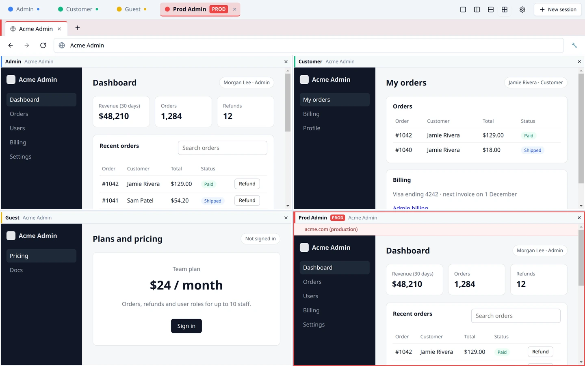
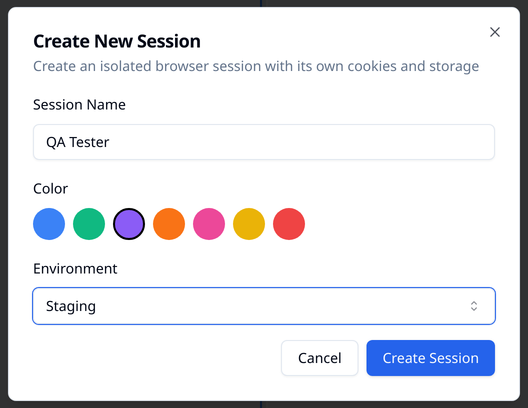

Test multiple user roles at once
Create one SessionForge session per role, log in once in each, and see up to four of them side by side in split view.


Four roles of one app in one window. The production session is marked with a red PROD label.
Why one browser window is not enough
A normal browser shares cookies across tabs. Log in as a Customer in a second tab and the Admin login is gone, so checking what each role sees means logging out and in again, or juggling private windows and separate browsers.
In SessionForge every session has its own cookies, localStorage, IndexedDB and cache (one Chromium partition each). Admin, Customer and Guest stay logged in at the same time, and an action by one shows up for the other as soon as the page updates.
How to set it up
- Create a session. Click New session, name it (for example "Admin"), pick a colour and an environment: Local, Staging, Production or Custom.
- Log in. Open your app in that session and log in as that role. Or, in Chrome, click the SessionForge Import extension and choose Send to SessionForge to copy an existing login into a new session.
- Repeat for Customer, Guest or any other role.
- Open split view. Pick a layout with the buttons at the right of the session bar: single, two columns, two rows or a 2x2 grid.
- Fill the panes. Click a pane to focus it, then click a session to show its last tab there.


The New Session dialog: name, colour and environment.
Tips
- Give each role a colour. The colour shows in the session bar and on the pane edge, so you always know which user you are looking at.
Cmd/Ctrl+1to4focus a pane. The tab bar, address bar and session bar then act on that pane.- Closing a session keeps its logins on disk.
Cmd/Ctrl+Shift+Treopens it with its tabs. SessionForge keeps your last 10 closed sessions; closing an 11th deletes the oldest for good. - Delete permanently in the close confirmation removes a session's cookies and storage.
- Mark real production logins as Production. They get a red PROD label, and coding agents can only read them.
Limitations. When several Google accounts are signed in to one Chrome profile, every login sent from that profile carries all of them, so keep one Google account per Chrome profile before you send it. Google blocks signing in to Google inside SessionForge; use the Sign in with Chrome banner instead. A session's environment can't be changed after it is created.
Next: let your agent check the roles
With the roles logged in, a coding agent can compare them for you. See a logged-in browser for your coding agent.
Try it with your own app
Free and open source for macOS, Windows and Linux.